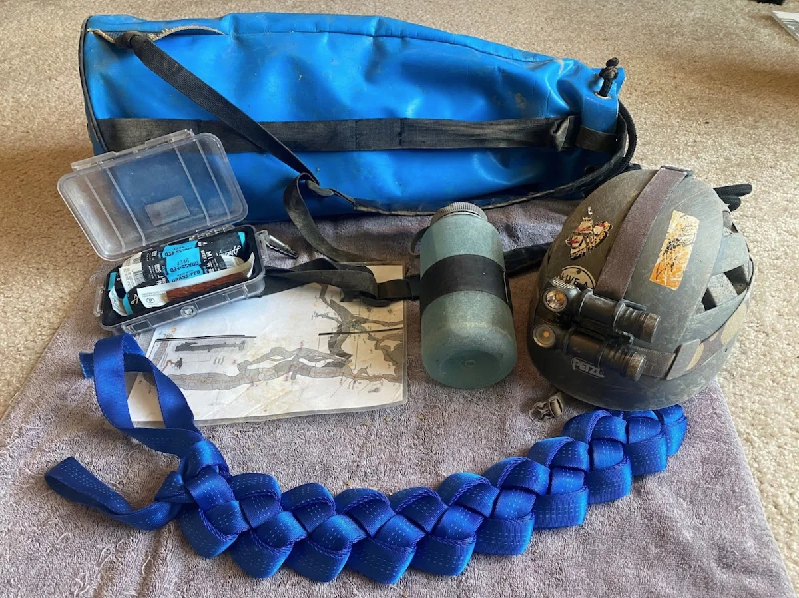
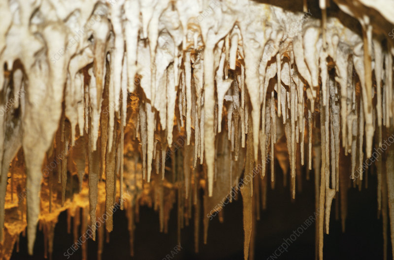

Safety

Group Size
When caving it is important to have the right number of people on the trip, not too little, not too many. When there are too few people, managing an emergency can be quite dangerous should one arise. When there are too many people, the cave can start to feel congested and make the trip longer, risking running out of energy or stamina. The maximum number of people in one group depends on the cave, but the minimum should always be 4. With 4 people, if 1 gets injured, then 1 can stay with the injured while 2 go together to get help.
Call Out
Call out is a very important safety measure to practice on any outdoor adventure, not just caving. Call out is letting at least 2 people know when and where you are going, and setting a time after you make it back to cell service to contact them and let them know you are safe and on your way home. Make sure your call out person knows that if you do not reach them before the designated time, they are to call emergency services (search and rescue) as well as another experienced caver (if you are going caving). Making the effort to have a call out could mean life or death in the wilderness, so it's better to play it safe.
Medical Kit
Just as with any other outdoor adventure, it is very important to have a med kit when caving. What you may need in a med kit will depend on the time of year and what kind of cave you are exploring, but here is a good general list to follow:
- Small candles*
- Waterproof matches or lighter*
- Large trash bag (big enough to cover your entire body)*
- Dried food (especially protein)
- Hand and foot warmers
- Back up batteries for headlamps
- Water
*These 3 items are used to keep warm and prevent hypothermia in cold caves: simply make a hole in the bottom of the trash bag, poke your head through the hole and cover your body with the rest of the bag, and finally light the candle inside of the bag. This will trap the heat inside and keep you warm while waiting for your turn to ascend or descend a rope.
Respect

Leave No Trace
The spectacular caves that we have the opportunity to explore have been around for many many years, much longer than any of us have been alive that's for sure, so we cannot let the short time we spend inside these caverns damage or ruin them. The "Leave No Trace" expectation applies to caves as well. What we take in, we must take out, meaning food, trash, and even human waste cannot be left inside the cave. Try to be a decent human being and keep it nice for future visitors, both human and animal.
Formations
Cave formations can be breathtaking, the simple flow of dripping water causes stalagmites to grow from the cave floor, reaching up toward the stalactites that hang down from above. In many caverns, cave pearls and sparkling crystal-like structures dot the walls and ceiling as well. These wonders took (at least) dozens of years to form, and can be easily disrupted and destroyed by the gentle touch of a hand or stray piece of gear. Remember you are a guest in this natural masterpiece, so please do not touch, move, or (heaven forbid) take anything that you don't have to.
Wildlife
Something we may tend to forget about is the fact that these beautiful caves are often home to some sort of wildlife. Cougars, snakes, ground squirrels, and bats are all potential residents of a cave you may be visiting. With this in mind, keep an eye out for animals that could be a danger to you, and leave the more vulnerable ones in peace as you pass through.